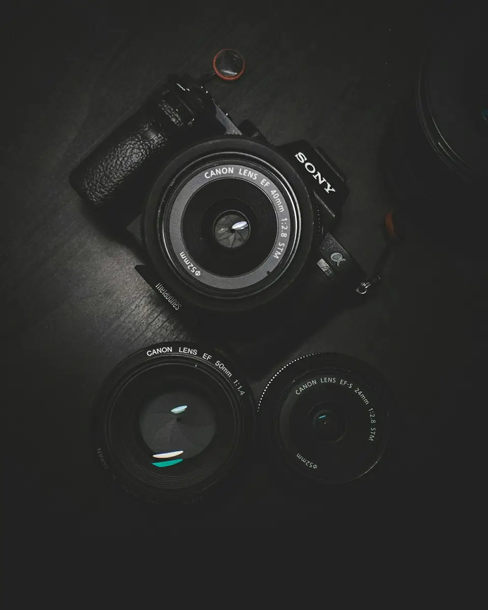

A day to remember
Unscripted moments, quiet details and the people who matter.
Natural photographs with thoughtful direction, whether you are marking a milestone or telling your brand’s story.
Selected stories ↓


An illustrative collection. Open an image to take a closer look.
Unscripted moments, quiet details and the people who matter.
A relaxed session with room for personality.
A walk, a conversation and a story of your own.
Light and landscape, seen a little differently.
Simple portraits with an editorial feel.
An occasion told through its smallest details.
Fictional demo: images are illustrative stock references. Any prices, schedules and listings shown are examples, not live offers.
Quiet direction when you need it. Space to be yourself when you do not. Share the kind of photographs you are drawn to and we will plan the session around that feeling.
Tell me about your session ↗
Image selection, editing scope and delivery format are agreed before the shoot.
Choose a kind of session, share your date and location, and tell us which images feel most like you.
This is a fictional design demo. The form previews the enquiry flow and does not send or store your details. Use the link to Ruhaan to discuss making this design your own.
Choose a kind of session, share your date and location, and tell us which images feel most like you.
Try this form with sample details. It previews an enquiry only—nothing is sent, stored or booked.
Ask Ruhaan for this website ↗